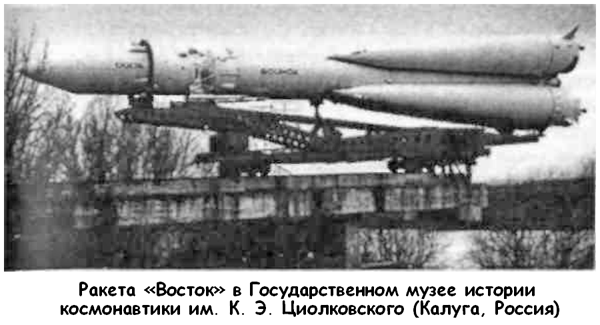
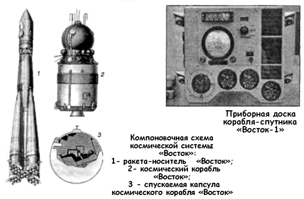

Катастрофа на Байконуре
До первого полета человека в космос советским медикам практически ничего не было известно о влиянии условий космического полета на организм человека. Высказывались только осторожные предположения, основанные на опыте авиационной медицины. Одни утверждали, что космический полет мало отличается от полета на самолете и никаких особых требований к космонавтам предъявлять не стоит. Другие утверждали, что космонавт, оказавшись в невесомости, просто сойдет с ума.
Медики спорили до хрипоты, а к единому мнению прийти никак не могли. Но все понимали, что до первого полета человека ответ должен быть найден обязательно. Тогда и было принято решение, что при проведении испытательных полетов на борту корабля должны присутствовать какие-нибудь животные. Выбор, как обычно, пал на собак. 28 июля стартовала ракета за индексом «8К72». Корабль-спутник «1К» № 1 с собаками Чайкой и Лисичкой на борту. Этот корабль был подготовлен гораздо лучше, чем его предшественник «1КП». Конструкторы проработали все возможные ситуации, чтобы более не допустить ошибки при выборе системы ориентации и выдаче команды на спуск с орбиты.
На 23-й секунде полета произошла катастрофа. Ракетные блоки разлетелись по степи, не причинив, к счастью, существенного вреда. Однако собаки погибли. Аварийная комиссия пришла к выводу, что наиболее вероятной причиной гибели носителя и корабля следует считать разрушение камеры сгорания бокового блока вследствие высокочастотных колебаний.
Почему эти колебания вдруг проявились, Валентин Глушко объяснить не смог. «Списали» на отступление от технологии.
Эта авария показала, насколько актуальна разработка системы спасения спускаемого аппарата. Хотя никаких сообщений ТАСС по событиям 28 июля не появилось и несчастные Чайка с Лисичкой оказались вычеркнуты из официальной истории космонавтики, их страшная гибель оказала стимулирующее воздействие на разработку такой системы. 19 августа 1960 года космический корабль «1К» № 2, на борту которого находились собаки Белка и Стрелка, благополучно вышел на орбиту, а уже 20-го они вернулись на Землю!
В ходе орбитального полета произошел такой же сбой, что и на первом корабле «1-КП», но на этот раз специалисты на Земле знали, как действовать. Газеты в те дни вышли под заголовками: «Теперь в космос полетит человек!». Поскольку из-за океана докладывали, что американцы ударными темпами готовят к суборбитальному полету корабль «Меркурий» и это позволит им запустить первого космонавта уже в начале 1961 года, на самом высоком уровне решили интенсифицировать работы по программе «Восток»: никто не хотел уступать Америке первенство. 11 октября 1960 года Хрущев подписал постановление, в котором создание пилотируемого космического корабля объявлялось задачей особой важности.
К тому времени было выпущено специальное «Положение по ЗКА» (заводской чертежный индекс «Востока»). В положении впервые директивно определялся порядок изготовления и заводских испытаний всех систем для пилотируемых полетов. Комплектующие «Восток» агрегаты, приборы, системы должны были маркироваться и иметь запись в формуляре «Годен для ЗКА». Поставка каких-либо комплектующих изделий на сборку «ЗКА» без прохождения ими полного цикла заводских испытаний запрещалась. Военным представителям предписывалось вести строжайший контроль за качеством и надежностью. За качество изделий с маркировкой «годен для ЗКА» несли личную ответственность главные конструкторы и руководители предприятий. Они не имели права передоверить свою подпись кому-либо из заместителей.
Эскизным проектом перед кораблем «ЗКА» ставилась только одна задача — обеспечить многочасовой полет человека в космическом пространстве по орбите спутника Земли и безопасное возвращение его на Землю. Для первого советского космонавта не предусматривалось заданий научного, прикладного или военного характера — только бы слетал и остался жив! Первый корабль имел все необходимые системы для этой задачи.


Кто-то из авторитетных ученых-психологов высказался в том смысле, что человек, оказавшийся вне Земли «один на один со всей Вселенной», не может нести ответственности за управление кораблем. Физиологи пугали и помутнением сознания в условиях невесомости. Поэтому с самого начала проектирования ответственность за ориентацию, выдачу тормозного импульса и все операции, обеспечивающие возвращение на Землю, полностью передавалась автоматической системе управления.
Однако система ручного управления на «Востоке» все же была смонтирована. Есть несколько версий по поводу идеи появления этой системы на корабле. Согласно одной из них, ее спроектировали и установили по личному требованию Королева, который не забывал, что некогда сам был летчиком, и не мог представить себе летательного аппарата без управления.
Согласно второй версии, при обсуждении системы автоматической ориентации и включения тормозного двигателя у конструкторов «Востока» возникла мысль: «Что стоит приделать к этой автоматике ручную систему?» Оказалось, что на базе обязательной автоматической системы ручную сделать несложно. Система ручного управления разрабатывалась так, что имелась возможность продублировать отказавшую (хотя и зарезервированную) автоматику для возвращения на Землю.
Для первого полета, из опасения за разум космонавта, кто-то предложил ввести цифровой кодовый замок. Только набрав код «125», можно было включить питание на систему ручного управления. На первый полет этот код сообщался космонавту в запечатанном конверте. Если он достанет из папки-инструкции конверт, вскроет его, прочтет и наберет код, значит, он в своем уме и ему можно доверить ручное управление.
По результатам полета Белки и Стрелки на «1К» было решено осуществить запуск человека на орбиту в декабре 1960 года — сразу после еще одного «собачьего» рейса на орбиту.
Однако реализации этого плана помешал целый ряд трагических событий. Неудачей закончились две попытки запуска ракет с автоматическими станциями к Марсу, а 24 октября произошла одна из самых страшных катастроф в истории советской ракетной техники.
В тот день на десятой стартовой площадке Байконура готовили к запуску боевую межконтинентальную ракету «Р-16» конструкции Михаила Янгеля. После ее заправки была обнаружена неисправность в автоматике двигателя. Техника безопасности требовала в таком случае слить топливо и лишь после этого устранять неполадки. Но в этом случае наверняка сорвался бы график запуска, пришлось бы отчитываться за это перед правительством.
Главнокомандующий ракетными войсками маршал Митрофан Иванович Неделин принял решение устранить неполадку прямо на заправленной ракете. Ракету облепили десятки специалистов, поднимаясь на нужный уровень по фермам обслуживания. Сам Неделин лично наблюдал за ходом работ, сидя на табурете в двадцати метрах от ракеты. Его, как обычно, окружала свита, состоявшая из руководителей министерств, главных конструкторов различных систем, чьи изделия использовались в ракете. Когда была объявлена 30-минутная готовность, подали питание на программное устройство. При этом случился сбой и прошла незапланированная команда на включение двигателей второй ступени. С высоты нескольких десятков метров ударила струя раскаленных газов. Многие, в том числе и маршал, погибли сразу, даже не успев понять, что именно произошло. Другие пытались бежать, срывая на бегу горящую одежду. Но их удержал забор из колючей проволоки, ограждавший со всех сторон стартовую установку. Люди попросту испарялись в адском пламени, от них оставались лишь очертания фигур на выжженной земле, связки ключей, монеты, пряжки ремней. Маршала Неделина впоследствии опознали по сохранившейся «Звезде Героя».
Всего в той катастрофе погибло 126 человек. Более 50 человек получили ранения и ожоги.
Хотя все эти аварии не имели прямого отношения к программе «Восток», но они косвенно повлияли на нее, отодвинув сроки первого полета человека в космос еще на несколько месяцев.
К сожалению, это были не последние катастрофы, с которыми связывают начало космической эры.
Старт корабля-спутника «1К» № 5 состоялся 1 декабря 1960 года. В обитаемой капсуле находились собаки Пчелка и Мушка. Сначала все шло нормально, но затем при возвращении на Землю начались проблемы. На борт была подана команда «на спуск», и в соответствии с ней на корабле была включена тормозная двигательная установка Исаева. Во время работы ТДУ корабль должен быть стабилизирован так, чтобы струя вылетающих из сопла газов была направлена строго по вектору орбитальной скорости. Это условие из-за дефекта системы стабилизации не было соблюдено. Результирующий импульс для торможения оказался существенно меньше расчетного. Траектория спуска получалась сильно растянутой, спускаемый аппарат вошел в атмосферу позднее расчетного времени, и траектория спуска корабля была такова, что он вполне мог приземлиться где-то вне пределов территории СССР. Дабы во «вражеские» руки не попали государственные тайны, на корабле была размещена система аварийного подрыва объекта. К слову сказать, в данном конкретном случае находившиеся на борту собаки были приравнены к прочему секретному оборудованию. Именно эта система сработала и уничтожила корабль, превратив его в тучу мелких обломков. Собаки погибли. Вместе с собаками погибла и надежда осуществить полет человека в 1960 году.
Следующий экспериментальный пуск корабля-спутника («1К» № 6) состоялся 22 декабря 1960 года В полет на этом корабле отправились собаки Шутка и Комета, мыши, крысы и другая живность. Но на участке работы третьей ступени произошел отказ, и поступила команда на отделение корабля.
Спускаемый аппарат совершил посадку в Якутии.
Королев настоял, и Госкомиссия отправила в Якутию поисковую группу во главе с Арвидом Палло. Вскоре поисковые вертолеты обнаружили недалеко от городка Тура цветные парашюты. Спускаемый аппарат лежал невредимый. Группа Палло с большой осторожностью приступила к открытию люков и разъединению всех электрических цепей, памятуя поговорку, что «сапер ошибается только один раз». Катапульта не выбросила контейнер с собаками из спускаемого аппарата. Этот случайный отказ спас жизнь собакам — внутри защищенного теплоизоляцией спасательного аппарата они себя отлично чувствовали, несмотря на четырехдневное ожидание при сорокаградусном якутском морозе. По поводу этого пуска никаких официальных сообщений не было.
Новый старт корабля-спутника смог состояться только через два с половиной месяца. Было сделано все возможное и невозможное, чтобы неприятности 1960 года не повторились. 9 марта 1961 года стартовал корабль-спутник «ЗКА» № 1 с собакой Чернушкой и манекеном, получившим про звище «Иван Иванович», на борту. Полет проходил по одно витковой программе, аналогичной той, которая планировалась для полета человека. Все этапы полета прошли нормально, и спускаемый аппарат совершил посадку в 260 километрах от Куйбышева. 25 марта 1961 года был запущен последний корабльспутник с собакой Звездочкой и манекеном на борту («ЗКА» № 2). Вообще-то в космос должна была лететь Удача, но за день до старта Юрий Алексеевич Гагарин, тогда еще просто один из кандидатов на полет, сказал: «Мы люди не суеверные, но удача нам и самим не помешает». Удачу окрестили Звездочкой. Под таким именем она и вошла в историю. Полет корабля-спутника в точности повторил предыдущий. Совершив один виток, спускаемый аппарат совершил посадку в районе Воткинска.
Теперь ничто уже не мешало полету человека в космос. 29 марта 1961 года состоялось заседание Приемной комиссии, заслушавшее предложение Королева о запуске человека на борту космического корабля «Восток». Заседание проводил Устинов. Он чувствовал историческую значимость предстоящего решения и поэтому просил каждого главного конструктора высказать свое мнение. Получив заверения о готовности систем, Устинов сформулировал решение: «Принять предложение главных конструкторов». Таким образом, Дмитрия Федоровича Устинова следует считать первым из высоких государственных руководителей, который дал «зеленый свет» запуску человека в космос…